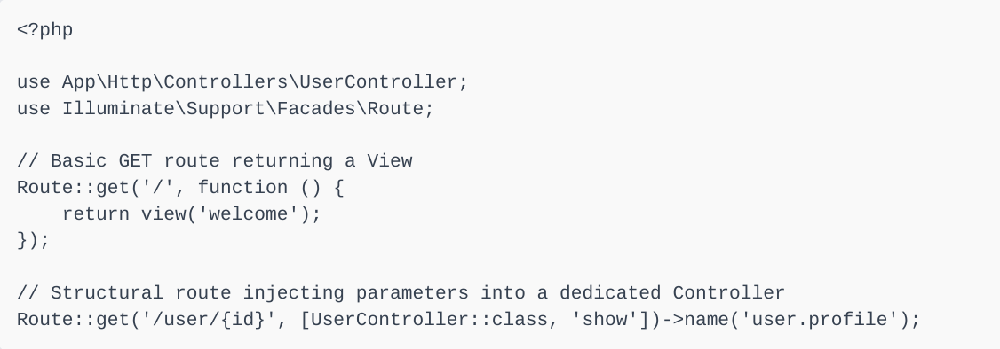
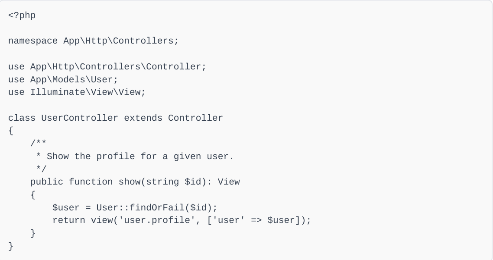
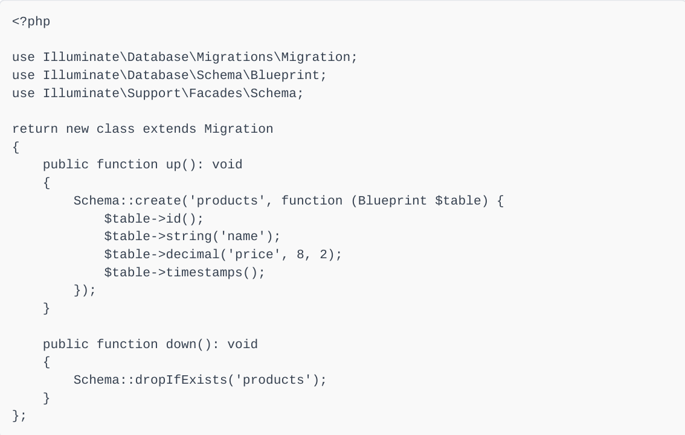
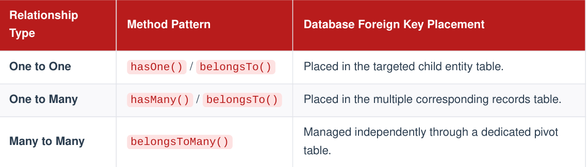
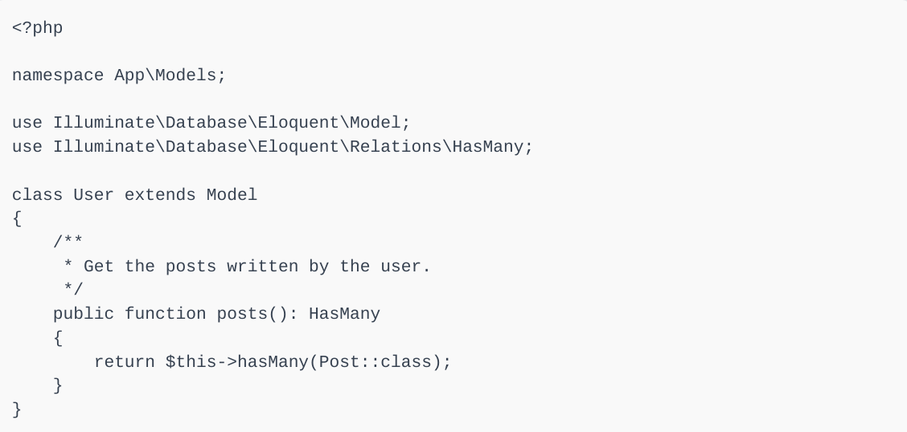

Laravel Course
Why Developers use it?
Laravel is known as a "batteries-included" framework. Instead of building core features—like user login, database connections, and security measures—from scratch, developers can rely on Laravel's built-in tools. This drastically speeds up development time and promotes clean, maintainable code.
- Eloquent ORM: An intuitive and elegant way to interact with your database using PHP instead of writing complex SQL queries.
- MVC Architecture: Automatically separates your code into Models (data), Views (user interface), and Controllers (logic), making your application organized and easy to maintain.
- Security Features: Includes built-in protection against common web vulnerabilities like SQL injection, cross-site scripting (XSS), and cross-site request forgery (CSRF).
- Artisan Console: A command-line interface (CLI) tool that automates repetitive tasks such as database migrations, code generation, and cache clearing.
- Routing System: A simple yet powerful system for defining how your application responds to incoming web requests.
- Blade Templating Engine: A fast, simple, and elegant templating engine that allows you to write clean PHP code within your HTML.
Chapter #1: Laravel Architecture & Request Lifecycle
Laravel is a robust, open-source PHP web framework engineered to streamline common web development paradigms such as routing, authentication, sessions, and caching. It enforces the Model-View-Controller (MVC) architectural design pattern.
1. The Request Lifecycle
Understanding the entry point and execution lifecycle of a Laravel application is essential for building highly performant applications:
- Entry Point: All HTTP requests enter the application through the public script public/index.php.
- HTTP Kernel: The request is sent to the HTTP Kernel ( App\Http\Kernel or framework core), which configures error handling, logging, and detects the application environment.
- Service Providers: The Kernel bootstraps the core Service Providers. These modules bind various infrastructure engines (database, queue, routing) into the Service Container.
- Routing Pipeline: Once the application is bootstrapped, the request is passed through global and route specific Middleware to ensure validation, encryption, and authentication standards are satisfied before reaching its matching controller endpoint.
The Service Container
The Service Container is a fundamental component of Laravel, responsible for managing class dependencies. It acts as a central registry that binds classes, interfaces, or configurations, and resolves them on demand. This promotes loose coupling, making the application easier to test and maintain.
Chapter #2: Routing, Middleware, & Controllers
The HTTP routing tier defines the public application pathways and maps incoming client requests directly to execution endpoints.
1. Declarative Web Routing
2. HTTP Middleware Layers
Routes are declared in files located inside the CSRF protection are maintained in routes/ directory. Web routes utilizing session states and routes/web.php .
Code:

2. HTTP Middleware Layers
Middleware structures act as defensive layers isolating application controllers. They execute code blocks before or after a request moves deeper into core application layers.
Modern design relies on declarative CSS systems instead of old-fashioned absolute floats:
- Before Middleware: Performs actions such as checking user authentication tokens or validating payload schemas.
- After Middleware: Modifies the out-going response payload or appends custom cookie variables to header outputs.
Controllers isolate HTTP transaction processing from background data layers. Rather than declaring fat closure executions inside route mapping files, related logic is clustered inside custom controller classes.

Chapter #3: Database Persistency & Eloquent ORM
2. Eloquent Relationships
Laravel provides an integrated object-relational mapping mechanism called **Eloquent ORM**. Every database table maps directly to a matching Model class structure.
1. Database MigrationsMigrations serve as version-control systems for application schema models. They allow developers to programmatic-ally alter structural tables across varied application environments.

2. Eloquent Relationships
Eloquent simplifies complex database operations by managing relational joins through intuitive methods:


Or you can download the Pdf files here.